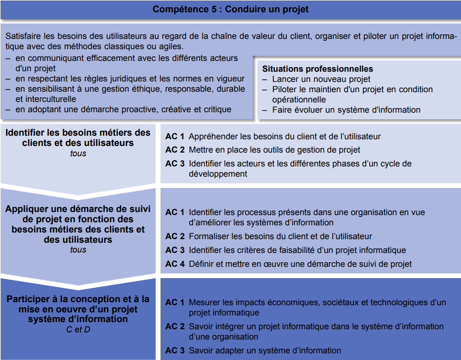

– Appréhender les besoins du client et de l'utilisateur
– Mettre en place les outils de gestion de projet
– Identifier les acteurs et les différentes phases d'un cycle
de développement
Apprentissage critique de la Competence

Evaluation
| Ressource | R2 Développement d'interface web | R8 Introduction Gestion orga. | R11 Bases de la comm |
| Coefficient | 18 | 27 | 15 |
SAE 5 Recueil de besoins
La problématique professionnelle est la conduite de projet à partir d'un besoin client. Cette SAÉ permet une première approche du recueil de besoins à travers le dialogue continu avec le client pour affiner les attentes fonctionnelles.
Ressources
R2
Développement d’interfaces web
- Faire des essais et évaluer leurs résultats en regard des
spécifications
-Développer des interfaces utilisateurs
Liste des composantes essentielles
Descriptif détaillé
Objectif L'objectif de cette ressource est d'apprendre les techniques de création de documents numériques sur le web en réponse à des besoins client. Cette ressource est une base pour réaliser un développement d'application tout en appréhendant les besoins du client et de l'utilisateur. Savoir de référence étudiés Spécifications d'interfaces utilisateur, maquettage (sketch, scénarios, persona…), Technologies d'affichage du Web (par ex. : Hypertext Markup Language (HTML), Cascading Style Sheet (CSS)…), Test de la conformité des sites Web aux standards d'accessibilité World Wide Web Consortium (W3C) / Web, Accessibility Initiative (WAI) Prolongements suggérés Génération de documents numériques
R8
Introduction à la gestion des organisations
Appréhender les besoins du client et de l'utilisateur
Descriptif détaillé
Objectif L'objectif de cette ressource est de découvrir l'organisation et la transformation numérique. D'une part, la découverte de l'organisation permet une compréhension des enjeux et les besoins sous-jacents des projets internes et externes animant les acteurs qui la composent. Les défis organisationnels du XXIe siècle, comme la transformation numérique des organisations, amènent également à se questionner sur les évolutions informatiques et managériales dans le but de mieux appréhender l'écosystème numérique et le futur contexte professionnel. Savoir de référence étudiés – Fondement des organisations • Définition et finalité de l'organisation • Environnement de l'organisation • Acteurs et fonctions de l'organisation • Culture d'entreprise • Situer une activité dans une organisation – Caractéristiques stratégiques et structurelles des organisations : • Typologie des organisations • Diagnostics et choix stratégiques – Enjeux de la transformation numérique des organisations : • Digitalisation des organisations • Nouvelles formes de management • Structure en réseau et entreprise virtuelle • Responsabilité sociétale des entreprises – Les différents savoirs de référence pourront être approfondis
R11
Bases de la comm
Configurer un poste de travail dans un réseau d'entreprise
Descriptif détaillé
Objectif L'objectif de cette ressource est d'aborder les fondamentaux de la communication. Cette ressource permet une approche sur l'importance de bien communiquer face à un client, de formuler ses questions de manière claire et pertinente pour recueillir les besoins du client. Elle permet de développer l'esprit critique et la capacité d'analyse nécessaires à la collecte d'informations. Enfin, la ressource permet la mise en place et l'appropriation d'outils de communication pour restituer les informations (sous formes diverses du papier au web) à destination d'un client oud'une équipe Savoir de référence étudiés – Communication verbale et non verbale – Recherche documentaire, appropriation, réutilisation de l'information, prise de notes, analyse critique des sources – Développement d'une attitude critique – Recueil des besoins (méthode de collecte, d'enquête, d'interview) – Conception de documents de communication (sous divers formats dont numériques) – Les différents savoirs de référence pourront être approfondis